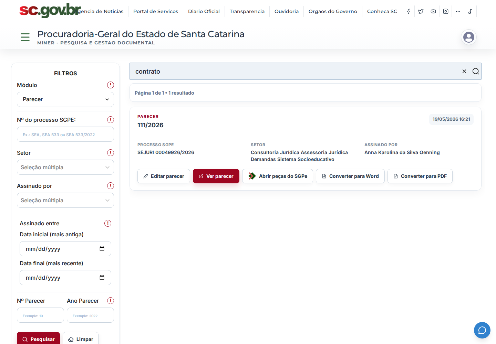
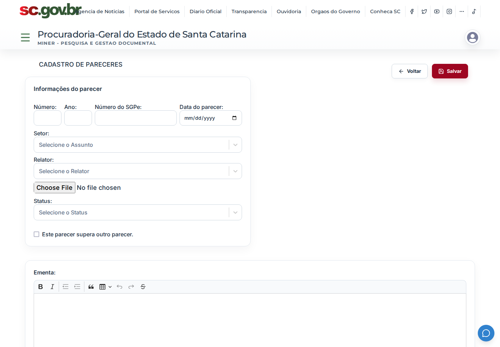
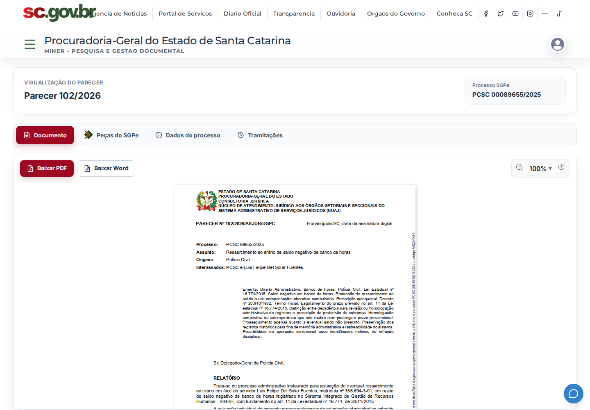
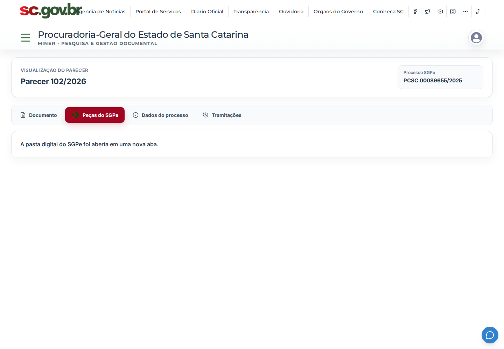
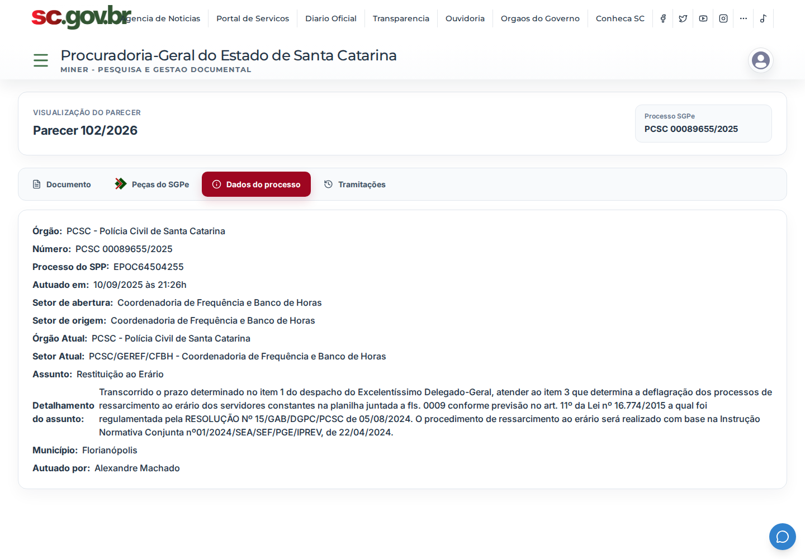

Módulo 03
Pareceres
Sistema jurídico para consulta, cadastro, gestão e publicação de pareceres, com leitura de PDFs, metadados de processo, sigilo, assinatura, superação de pareceres, integração com SGPe e rotinas mineradoras. O mesmo backend também sustenta Atos Normativos, Despacho Jurídico, Petição Inicial, Corregedoria e fluxos de dispensa de recursos.

O que entrega
- Consulta e filtros de pareceres com busca textual e metadados jurídicos
- Cadastro e edição com documentos, assinatura, sigilo, status e ementa
- Visualização de PDF, peças SGPe, pareceres superados e histórico
- Atos Normativos, Despacho Jurídico, Petição Inicial e Corregedoria
- Rotinas de mineração para SGPe, Drive PGE, SAJ e dispensa de recursos
Frontend
Backend e busca
Documentos e integrações
A entrada passa pela Plataforma, com login institucional e encaminhamento para o módulo protegido de pareceres.
Jobs importam documentos do SGPe, Drive PGE, SAJ e bases externas, alimentando PostgreSQL e índices Elasticsearch.
O backend aplica status, sigilo, permissões de edição/exclusão, assinatura e vínculos entre pareceres.
Galeria do módulo
Telas internas do Pareceres logado: consulta, busca, cadastro, documento, peças SGPe e dados do processo.




